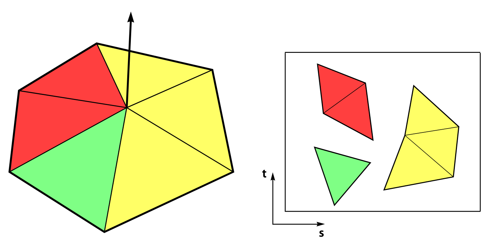

Mesh Utility Functions
This page describes various mesh and attribute utilities available in Lagrange's core module. The functions are organized into the following groups:
Normals and Tangents
Functions for generating shading attributes: per-facet, per-vertex, and per-corner normals, and tangent-space vectors.
Compute Mesh Normals
As described in our Mesh Utilities page, mesh normals can be computed using one of the following function:
#include <lagrange/compute_normal.h>
#include <lagrange/compute_facet_normal.h>
#include <lagrange/compute_vertex_normal.h>
lagrange::SurfaceMesh<Scalar, Index> mesh;
// Compute per-facet normals
lagrange::FacetNormalOptions facet_options;
auto fid = compute_facet_normal(mesh, facet_options);
// Compute per-vertex normals using a uniform weight for each incident triangle
VertexNormalOptions vertex_options;
vertex_options.weight_type = lagrange::NormalWeightingType::Uniform;
auto vid = compute_vertex_normal(mesh, vertex_options);
// Compute indexed per-corner normals. Edges with a dihedral
// angle smaller than π/2 will be considered smooth
Scalar angle_threshold_rad = M_PI * 0.5;
auto cid = compute_normal(mesh, angle_threshold_rad);
See Mesh Utilities reference documentation for more details.
Compute Tangent Space
Lagrange offers a function to compute tangent-space information, following [Mikkelsen 2008]1:
#include <lagrange/compute_tangent_bitangent.h>
lagrange::SurfaceMesh<Scalar, Index> mesh;
lagrange::TangentBitangentOptions options;
// Pad the 4th channel of the output attributes with
// a ±1 indicating the sign of the UV triangle
options.pad_with_sign = true;
auto btn = compute_tangent_bitangent(mesh, options);
btn.tangent_id; // id of the generated tangent vector attribute
btn.bitangent_id; // id of the generated bitangent vector attribute
The input mesh must have an existing indexed UV and normal attribute. The
options.output_element_type can be either Indexed (default), or Corner:
- If the output type is
Corner, no averaging is performed, and the output attribute contains directly the per-corner tangent space. - If the output type is
Indexed, averaging is performed based on the provided indexed attributes. Corners with identical normals and UVs will be considered as a single smoothing group for tangent space computation.

Corners are grouped into different smoothing groups, based on provided UV and normal attributes. Image from [Mikkelsen 2008]1
Accuracy vs Mikktspace
We have unit
tests
comparing our results with the original mikktspace code [Mikkelsen 2008]1. We found that, in
floating points, we have a max error of 1e-6f.
Performance vs Mikktspace
Our benchmark shows that we are 5x-6x faster than mikktspace, mostly due to the addition of multithreading.
Welding Attributes
The original mikktspace code expects the input UV/normals as a per-corner value, and will always weld corners sharing identical UV/normal values. In contrast, our mesh data structure uses a more generic indexed attribute, and we use an attribute's index to identify and group together identical corners.
In practice, this means that you will need to weld together any identical attributes that do not share the same indices, or you may end up with different result compared to mikktspace.
Limitations: Triangle Meshes vs Quad Meshes
- Our code for averaging tangent vectors only support triangle meshes at the moment.
- Quad meshes and quad-dominant meshes can be used, but only with
output_element_type = Corner(no averaging will be performed). - General polyhedral facets (with > 4 vertices) are not supported at the moment.
Geometric Quantities
Derived geometric measurements: bounding boxes, areas, centroids, edge and dihedral metrics, facet circumcenters, and statistical descriptors.
Bounding Box
The axis-aligned bounding box of the mesh vertices is returned as an Eigen::AlignedBox:
#include <lagrange/mesh_bbox.h>
// The Dimension template parameter (2 or 3) must match the mesh dimension
auto bbox = lagrange::mesh_bbox<3>(mesh);
auto center = bbox.center();
auto diagonal = bbox.diagonal();
See: Mesh Utilities documentation.
Area and Centroid
Facet/mesh areas and facet/mesh centroids can be computed with the following functions:
#include <lagrange/compute_area.h>
#include <lagrange/compute_centroid.h>
// Per-facet area, stored as a facet attribute
auto area_id = lagrange::compute_facet_area(mesh);
// Total mesh surface area
Scalar total_area = lagrange::compute_mesh_area(mesh);
// Per-facet centroid, stored as a facet attribute
auto centroid_id = lagrange::compute_facet_centroid(mesh);
// Mesh centroid (weighted sum of facet centroids, area-weighted by default)
std::array<Scalar, 3> center;
lagrange::MeshCentroidOptions centroid_options;
centroid_options.weighting_type = lagrange::MeshCentroidOptions::Area;
lagrange::compute_mesh_centroid(mesh, center, centroid_options);
UV Area
compute_uv_area() computes the total area, in UV space, of an indexed UV attribute.
See: Mesh Utilities documentation.
Edge Lengths
Per-edge lengths are computed with compute_edge_lengths() and stored as an edge attribute (mesh
edges are initialized if needed):
#include <lagrange/compute_edge_lengths.h>
auto length_id = lagrange::compute_edge_lengths(mesh);
See: Mesh Utilities documentation.
Dihedral Angles
compute_dihedral_angles() computes, for each edge, the angle between the two incident facets,
stored as an edge attribute:
#include <lagrange/compute_dihedral_angles.h>
auto angle_id = lagrange::compute_dihedral_angles(mesh);
By default, facet normals are computed as needed and stored under @facet_normal; use the options to
reuse cached normals or keep them around.
The angle is only well defined for manifold (interior) edges with exactly two incident facets. Other
edges use conventional defaults: boundary edges (a single incident facet) are assigned 0, and
non-manifold edges (three or more incident facets) are assigned 2π.
See: Mesh Utilities documentation.
Facet Circumcenter
compute_facet_circumcenter() computes the circumcenter of each facet, stored as a facet attribute:
#include <lagrange/compute_facet_circumcenter.h>
auto circumcenter_id = lagrange::compute_facet_circumcenter(mesh);
See: Mesh Utilities documentation.
Covariance and PCA
The covariance matrix of a mesh, about a given center, is returned by compute_mesh_covariance():
#include <lagrange/compute_mesh_covariance.h>
lagrange::MeshCovarianceOptions options;
options.center = {0, 0, 0};
std::array<std::array<Scalar, 3>, 3> cov = lagrange::compute_mesh_covariance(mesh, options);
For a raw point cloud, compute_pointcloud_pca() returns the principal components. The input
points is a span<const Scalar> of packed xyz coordinates (three entries per point):
#include <lagrange/compute_pointcloud_pca.h>
lagrange::ComputePointcloudPCAOptions options;
options.shift_centroid = true; // compute covariance about the centroid
options.normalize = true; // divide by the number of points
auto pca = lagrange::compute_pointcloud_pca<Scalar>(points, options);
pca.center; // point the covariance is evaluated around
pca.eigenvectors; // 3 principal components, sorted by weight magnitude
pca.eigenvalues; // corresponding weights
See: Mesh Utilities documentation.
Transforms
Apply an affine transform to a mesh, or normalize its position and scale.
Normalize Meshes
Meshes can be normalized to fit in a unit box centered at the origin using the normalize_meshes()
function, which modifies the mesh in place:
#include <lagrange/normalize_meshes.h>
// Normalize a single mesh
normalize_mesh(mesh);
// Normalize a list of meshes using the same transform for all meshes
using MeshType = SurfaceMesh32f;
std::vector<MeshType *> meshes;
meshes.push_back(&mesh1);
meshes.push_back(&mesh2);
meshes.push_back(&mesh3);
normalize_meshes(meshes);
See: Mesh Utilities documentation.
Transform Meshes
An affine transform can be applied to a mesh with transform_mesh() (in place) or transformed_mesh()
(returns a copy). Attributes are transformed according to their usage tag: positions by \(M\), normals by
\(\det(M)\,M^{-T}\), and tangents/bitangents by \(M\) (then normalized).
#include <lagrange/transform_mesh.h>
// Build a 3D affine transform (its dimension must match the mesh dimension)
using Transform = Eigen::Transform<Scalar, 3, Eigen::Affine>;
Transform M = Transform::Identity();
M.scale(Scalar(2));
M.translate(Eigen::Matrix<Scalar, 3, 1>(1, 0, 0));
lagrange::TransformOptions options;
options.normalize_normals = true; // re-normalize normals after transform
options.reorient = true; // flip normals & facet orientation when det(M) < 0
// Modify the mesh in place...
lagrange::transform_mesh(mesh, M, options);
// ...or produce a new transformed mesh
auto result = lagrange::transformed_mesh(mesh, M, options);
See: Mesh Utilities documentation.
Connectivity and Graph Algorithms
Query and traverse the mesh connectivity graph: vertex valence, adjacency lists, connected components, boundary loops, topological invariants, and graph traversals.
Vertex Valence
Vertex valence can be computed using the compute_vertex_valence() function:
#include <lagrange/compute_vertex_valence.h>
#include <lagrange/views.h>
#include <lagrange/Logger.h>
lagrange::SurfaceMesh<Scalar, Index> mesh;
// Compute vertex valence as a per-vertex attribute
auto id = lagrange::compute_vertex_valence(mesh);
// Count regular vertices using a Eigen::Map view of the attribute
auto vertex_valence = attribute_vector_view<Index>(mesh, id);
auto num_regular_vertices = (vertex_valence.array() == 6).count();
lagrange::logger().info("The mesh has {} regular vertices", num_regular_vertices);
Adjacency Graph
While our mesh class offers some low-level navigation methods, sometimes it beneficial to operate on an explicit adjacency list representation of a connectivity graph. Currently we offer the function compute_vertex_vertex_adjacency() to compute the corresponding adjacency list graph:
#include <lagrange/compute_vertex_vertex_adjacency.h>
lagrange::SurfaceMesh<Scalar, Index> mesh;
// Build adjacency list representation of the vertex-vertex connectivity graph
auto graph = lagrange::compute_vertex_vertex_adjacency(mesh);
// Display all edges of the graph
assert(graph.get_num_entries() == mesh.get_num_vertices());
for (Index x = 0; x < mesh.get_num_vertices(); ++x) {
lagrange::logger().info("Vertex v{} has {} neighbors", x, graph.get_num_neighbors(x));
for (Index y : graph.get_neighbors(x)) {
lagrange::logger().info("Edge v{} -> v{}", x, y);
}
}
Connectivity & Edge Information
While our mesh navigation methods require the user to
call mesh.initialize_edges() beforehand, compute_vertex_vertex_adjacency() does not have
such a requirement, and will compute vertex-vertex connectivity information directly.
Similarly, compute_facet_facet_adjacency() builds a facet-facet
adjacency graph. Two facets are considered adjacent if they share an edge (ConnectivityType::Edge,
the default) or a vertex (ConnectivityType::Vertex):
#include <lagrange/compute_facet_facet_adjacency.h>
// Two facets are adjacent if they share an edge
auto graph = lagrange::compute_facet_facet_adjacency(mesh, lagrange::ConnectivityType::Edge);
for (Index f = 0; f < mesh.get_num_facets(); ++f) {
for (Index g : graph.get_neighbors(f)) {
// Facets f and g are adjacent
}
}
Connected Components
Connected components can be computed via the compute_components() function:
#include <lagrange/compute_components.h>
lagrange::SurfaceMesh<Scalar, Index> mesh;
// Consider facets to be connected if they are touching by a common vertex
lagrange::ComponentOptions options;
options.connectivity_type = lagrange::ConnectivityType::Vertex;
// Compute connected components as a per-facet attribute
auto num_components = lagrange::compute_components(mesh, options);
auto component_id = mesh.get_attribute<Index>(options.output_attribute_name).get_all();
for (Index f = 0; f < mesh.get_num_facets(); ++f) {
assert(0 <= component_id[f] && component_id[f] < num_components);
}
You can choose between edge-connected and vertex-connected components via the
options.connectivity_type parameter. To split the labelled components into independent meshes, see
Separate by Components.
Boundary Loops
The boundary loops of a mesh can be extracted as ordered lists of vertex indices using
extract_boundary_loops():
#include <lagrange/extract_boundary_loops.h>
#include <lagrange/Logger.h>
// Each loop is an ordered list of vertex indices
std::vector<std::vector<Index>> loops = lagrange::extract_boundary_loops(mesh);
lagrange::logger().info("Mesh has {} boundary loop(s)", loops.size());
Topology Queries
Basic topological queries operate directly on a SurfaceMesh:
#include <lagrange/topology.h>
bool closed = lagrange::is_closed(mesh); // no boundary edges
bool manifold = lagrange::is_manifold(mesh); // vertex- and edge-manifold
bool vtx_manifold = lagrange::is_vertex_manifold(mesh);
bool edge_manifold = lagrange::is_edge_manifold(mesh);
int euler = lagrange::compute_euler(mesh); // Euler characteristic
Dijkstra Distance
Geodesic-like distance can be propagated from a seed facet across the mesh using
compute_dijkstra_distance(), storing the result as a per-vertex attribute:
#include <lagrange/compute_dijkstra_distance.h>
lagrange::DijkstraDistanceOptions<Scalar, Index> options;
options.seed_facet = 0;
options.barycentric_coords = {Scalar(1) / 3, Scalar(1) / 3, Scalar(1) / 3};
options.radius = 0; // 0 means no distance limit
options.output_involved_vertices = true;
// Optionally returns the list of vertices reached
auto involved = lagrange::compute_dijkstra_distance(mesh, options);
See: Mesh Utilities documentation.
Greedy Coloring
compute_greedy_coloring() assigns a color id to each vertex or facet so that adjacent elements
receive different colors (for example, to give neighboring mesh triangles distinct colors when
rendering):
#include <lagrange/compute_greedy_coloring.h>
lagrange::GreedyColoringOptions options;
options.element_type = lagrange::AttributeElement::Vertex;
options.num_color_used = 8; // minimum number of colors to cycle through
auto color_id = lagrange::compute_greedy_coloring(mesh, options);
See: Mesh Utilities documentation.
Combining and Splitting
Merge multiple meshes into a single aggregate, or split a mesh into independent pieces.
Combine Meshes
It is possible to combine multiple meshes into a single aggregated mesh via the
combine_meshes() function. This function preserves attributes by default, unless
called with preserve_attributes = false. When preserving input mesh attributes, all attributes in
the input meshes must be compatible (i.e. all meshes share the same attributes, with the same
type/number of channels, etc.).
#include <lagrange/combine_meshes.h>
lagrange::SurfaceMesh<Scalar, Index> mesh1, mesh2, mesh3;
// Call via initializer list of mesh pointers
auto aggregate_mesh1 = lagrange::combine_meshes({&mesh1, &mesh2, &mesh3});
// Call via an array of meshes (meshes are shallow-copied in this example)
constexpr size_t num_meshes = 3;
std::array<const SurfaceMesh<Scalar, Index>, num_meshes> mesh_list = {
mesh1,
mesh2,
mesh3};
auto aggregate_mesh2 = lagrange::combine_meshes(mesh_list);
// Call via generic callbacks
auto aggregate_mesh3 = lagrange::combine_meshes(num_meshes,
[](size_t idx) -> const SurfaceMesh<Scalar, Index> & {
return mesh_list[idx];
});
Separate by Components
While compute_components() labels facets in place, separate_by_components()
splits a mesh into a list of independent meshes, one per connected component:
#include <lagrange/separate_by_components.h>
lagrange::SeparateByComponentsOptions options;
options.map_attributes = true; // copy attributes over to each output submesh
std::vector<lagrange::SurfaceMesh<Scalar, Index>> parts =
lagrange::separate_by_components(mesh, options);
A related function, separate_by_facet_groups(), splits a mesh based on a user-provided per-facet
group id.
Mesh Editing
Functions that modify mesh geometry or connectivity: triangulation, isolines, thickening, and element reordering.
Triangulate Polygonal Facets
A mesh with polygonal facets can be turned into a pure triangle mesh by calling the following code:
#include <lagrange/triangulate_polygonal_facets.h>
// Modifies the mesh in place
triangulate_polygonal_facets(mesh);
Under the hood we use Mapbox's Earcut implementation for polygonal facets with 5 vertices or more.
See: Mesh Utilities documentation.
Isolines
Given a scalar field stored as a vertex or indexed attribute, isolines can be extracted, inserted, or used to trim a triangle mesh:
#include <lagrange/isoline.h>
lagrange::IsolineOptions options;
options.attribute_id = scalar_field_id; // vertex or indexed scalar attribute
options.isovalue = 0.0;
// Extract the isoline as a collection of edge segments
auto isoline = lagrange::extract_isoline(mesh, options);
// Keep only the part of the mesh below the isovalue
options.keep_below = true;
auto trimmed = lagrange::trim_by_isoline(mesh, options);
// Split facets crossed by the isoline, keeping the whole mesh (mixed tri/quad output)
auto inserted = lagrange::insert_isoline(mesh, options);
Triangle Meshes Only
Isoline operations require a triangle mesh as input.
Deprecated marching_triangles
These functions supersede the old marching_triangles.h header, which is now deprecated.
Thicken and Close
thicken_and_close_mesh() offsets a (possibly open) surface along a direction and closes it into a
solid shell, returning a new mesh:
#include <lagrange/thicken_and_close_mesh.h>
lagrange::ThickenAndCloseOptions options;
options.offset_amount = 0.1;
// Offset along vertex normals (default when `direction` is left empty)...
auto shell = lagrange::thicken_and_close_mesh(mesh, options);
// ...or along a fixed direction
options.direction = std::array<double, 3>{0, 0, 1};
auto extruded = lagrange::thicken_and_close_mesh(mesh, options);
See: Mesh Utilities documentation.
Reorder Mesh
Vertices and facets can be reordered for better cache locality using reorder_mesh():
#include <lagrange/reorder_mesh.h>
// Spatially sort using a Hilbert curve (also: Lexicographic, Morton, None)
lagrange::reorder_mesh(mesh, lagrange::ReorderingMethod::Hilbert);
For explicit control, permute_vertices() / permute_facets() apply a new_to_old permutation in
place, while remap_vertices() applies a (possibly non-injective) forward_mapping that merges
vertices sent to the same index according to a collision policy:
#include <lagrange/permute_vertices.h>
#include <lagrange/remap_vertices.h>
// new_to_old[i] gives the old index of the vertex now at position i
lagrange::permute_vertices(mesh, new_to_old);
// forward_mapping[i] gives the new index of old vertex i (merges on collision)
lagrange::RemapVerticesOptions remap_options;
remap_options.collision_policy_float = lagrange::MappingPolicy::Average;
lagrange::remap_vertices(mesh, forward_mapping, remap_options);
Edge Information
remap_vertices() cannot update edge information, so it will throw if the mesh has edges
initialized. The forward_mapping must be surjective.
See: Mesh Utilities documentation.
Consistency and Repair
Make a mesh internally consistent: unify facet orientation, unify index buffers, and weld near-duplicate attribute values. See also Remove Duplicate Vertices in the Mesh Cleanup guide for merging coincident vertices.
Orient Outward
The facets of each connected component can be re-oriented so that their signed volume is positive (outward-facing) or negative:
#include <lagrange/orient_outward.h>
lagrange::OrientOptions options;
options.positive = true; // orient each component with positive (outward) volume
lagrange::orient_outward(mesh, options);
This relies on the signed volume of each connected component, so it is only meaningful for closed meshes. Open meshes have no well-defined "outward" orientation.
Unify Index Buffers
It is possible to unify various indexed attributes so they can share the same index buffer. This is especially useful for rendering, e.g. to turn a mesh with different indexing for normals, uv, etc. into something suitable for the GPU.
#include <lagrange/unify_index_buffer.h>
// Using attribute id to identify indexed attribute to unify
auto unified_mesh = unify_index_buffer(mesh, {normal_id, uv_id});
// Using attribute names instead
auto unified_mesh = unify_index_buffer(mesh, {"normals", "uv"});
Vertex Indices
The output mesh will use a unified index buffer for both vertex positions and the provided indexed attributes. As a result, some vertices might be duplicated (e.g. if two incident corners have different normals, or a UV seam).
See: Attributes Utilities documentation.
Weld Indexed Attribute
weld_indexed_attribute() merges near-identical values of an indexed attribute so they share the
same index, based on absolute/relative/angular tolerances. This is often needed before computing
tangents (see the tip in Compute Tangent Space) or unifying index buffers:
#include <lagrange/weld_indexed_attribute.h>
lagrange::WeldOptions options;
options.epsilon_rel = 1e-6; // relative L-inf tolerance
lagrange::weld_indexed_attribute(mesh, normal_id, options);
See: Attributes Utilities documentation.
Attributes
Transfer attributes between element types, or filter which attributes a mesh keeps.
Transfer Mesh Attributes
Attributes can be mapped from one type of mesh element to another using the
map_attribute() functions.
#include <lagrange/compute_vertex_normal.h>
#include <lagrange/map_attribute.h>
// Transfer vertex normal attribute onto mesh facets (values will be averaged)
auto vid = compute_vertex_normal(mesh);
auto fid = map_attribute(mesh, vid, "new_name", lagrange::AttributeElement::Facet);
One can also transfer an attribute type in place (i.e. without creating a new attribute, just replacing the old one):
#include <lagrange/compute_vertex_normal.h>
#include <lagrange/map_attribute.h>
// Transfer vertex normal attribute onto mesh facets (values will be averaged)
auto id = compute_vertex_normal(mesh);
map_attribute_in_place(mesh, id, lagrange::AttributeElement::Facet);
auto &attr = mesh.get_attribute<Scalar>(id);
assert(attr.get_element_type() == lagrange::AttributeElement::Facet);
Transferring attributes from any element type to any other type is supported. The values will either be dispatched or gathered depending on the type of operation, as summarized below:
| Source\Target | Vertex | Facet | Edge | Corner | Indexed | Value |
|---|---|---|---|---|---|---|
| Vertex | ∅ | Gather | Gather | Dispatch | Dispatch | Dispatch |
| Facet | Gather | ∅ | Gather | Dispatch | Dispatch | Dispatch |
| Edge | Gather | Gather | ∅ | Dispatch | Dispatch | Dispatch |
| Corner | Gather | Gather | Gather | ∅ | Dispatch | Dispatch |
| Index | Gather | Gather | Gather | Dispatch | ∅ | Dispatch |
| Value | Dispatch | Dispatch | Dispatch | Dispatch | Dispatch | ∅ |
Example
- Transferring a vertex attribute to mesh corner elements is a dispatch operation, and will not modify any value.
- Transferring a corner attribute to mesh vertex elements is an gather operation, and numerical values will be averaged.
Value Attributes
When transferring a value attribute to any other type of element, it is expected that the number of entries in the source attribute matches the target number of mesh element.
Conversely, transferring from any other mesh element type to a value attribute will create a buffer with the same number of entries as the input attribute element type.
Indexed Attributes and Value Attributes
When transferring a value attribute to an indexed attribute (and vice-versa), the value attribute is expected to have a number of elements equals to the number of mesh corners.
- Transferring
Value->Indexedwill create an indexed attribute with a trivial index buffer (identity mapping corner \(c_i\) \(\to\) value \(i\)). - Transferring
Indexed->Valuewill interpret the indexed attribute as if it were a corner attribute. The indexing will be lost on conversion.
See: Attributes Utilities documentation.
Filter Attributes
filter_attributes() returns a copy of a mesh keeping only the attributes matching a filter, which
can select by name/id, attribute usage, or element type:
#include <lagrange/filter_attributes.h>
lagrange::AttributeFilter filter;
// Keep only the "normals" and "uv" attributes
filter.included_attributes = std::vector<lagrange::AttributeFilter::AttributeNameOrId>{
std::string("normals"),
std::string("uv")};
auto filtered = lagrange::filter_attributes(mesh, filter);
See: Attributes Utilities documentation.
Selection and Parameterization
Select facets and work with UV parameterizations.
Select Facets
Facets can be selected by flood-filling from a seed facet based on normal similarity, or by testing against a view frustum. Both write a per-facet selection attribute.
#include <lagrange/select_facets_by_normal_similarity.h>
// Grow a selection outward from a seed facet, stopping at sharp normal transitions
Index seed_facet_id = 0;
lagrange::SelectFacetsByNormalSimilarityOptions options;
auto selection_id = lagrange::select_facets_by_normal_similarity(mesh, seed_facet_id, options);
#include <lagrange/select_facets_in_frustum.h>
// Select all facets intersecting the cone/frustum bounded by four planes
lagrange::Frustum<Scalar> frustum; // define the four bounding planes (normal + point)
lagrange::FrustumSelectionOptions options;
bool any_selected = lagrange::select_facets_in_frustum(mesh, frustum, options);
UV Utilities
Lagrange offers several utilities operating on UV (indexed) attributes.
Charts (connected components in UV space) can be labelled with a per-facet chart id:
#include <lagrange/compute_uv_charts.h>
lagrange::UVChartOptions options;
options.uv_attribute_name = "uv"; // if empty, the first UV attribute is used
auto num_charts = lagrange::compute_uv_charts(mesh, options);
Seam edges (edges where the UV parameterization is discontinuous) can be marked as a per-edge attribute:
#include <lagrange/compute_seam_edges.h>
auto seam_id = lagrange::compute_seam_edges(mesh, uv_attribute_id);
UV distortion can be measured per facet using a choice of metrics (MIPS, SymmetricDirichlet,
AreaRatio, ...):
#include <lagrange/compute_uv_distortion.h>
lagrange::UVDistortionOptions options;
options.uv_attribute_name = "uv";
options.metric = lagrange::DistortionMetric::MIPS;
auto distortion_id = lagrange::compute_uv_distortion(mesh, options);
Related UV Functions
See also disconnect_uv_charts(), unflip_uv_charts(), compute_uv_orientation(), and
uv_mesh_view() / uv_mesh_ref() for extracting the UV layout as a standalone mesh.
-
Mikkelsen, M. 2008. Simulation of wrinkled surfaces revisited. Simulation of wrinkled surfaces revisited. Master’s thesis, University of Copenhagen, Universitetsparken 1, 2100 København, Denmark, http://www.mikktspace.com/. ↩↩↩